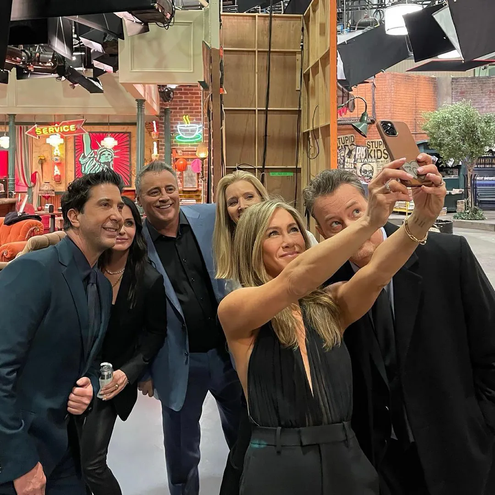
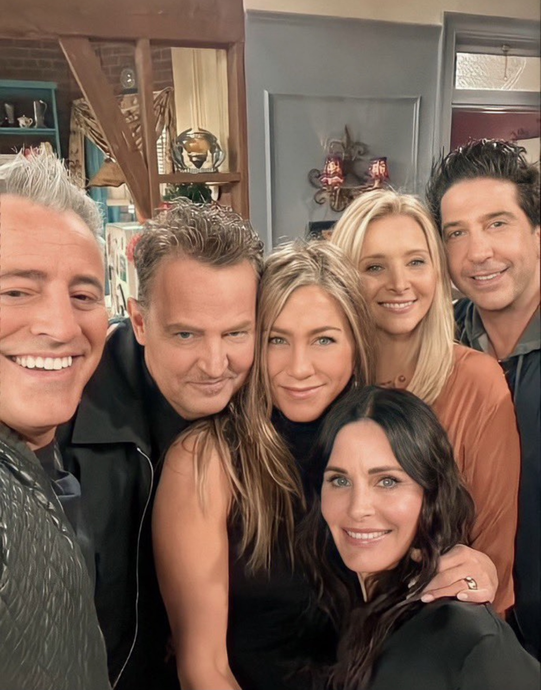

Legacy
Awards
Influence
Vox stated that Friends had an impact on the creation of other conflictless "hangout sitcoms", with groups of adult friends who are funny and have similar character traits. One example of this is How I Met Your Mother, which The Guardian's TV and radio blog noted also shares its setting (Manhattan) with Friends. Other examples include The Big Bang Theory, New Girl, and Happy Endings.
Friends was parodied in the twelfth season Murder, She Wrote episode "Murder Among Friends". In the episode, amateur sleuth Jessica Fletcher (Angela Lansbury) investigates the murder of Ricki Vardian (Cindy Katz) a producer for Buds, a fictional television series about the daily lives of a group of city friends. The episode was devised after CBS moved Murder, She Wrote from its regular Sunday night timeslot to a Thursday night timeslot directly opposite Friends on NBC; Angela Lansbury was quoted by Bruce Lansbury, her brother, and Murder, She Wrote's supervising producer, as having "a bit of an attitude" about the move to Thursday, but he saw the plot as "a friendly setup, no mean-spiritedness." Jerry Ludwig, the writer of the episode, researched the "flavor" of Buds by watching episodes of Friends.
The Reunion
Friends: The Reunion is a 2021 reunion special of the American television sitcom Friends, and the sitcom's first feature-length film. The special was hosted by James Corden and executive produced by the show's cocreators, Marta Kauffman and David Crane, Kevin S. Bright, the show's main cast, and Ben Winston (who also directed the special). The special premiered on HBO Max on May 27, 2021. The special sees the main cast revisit the sets of the original show (such as the Friends' apartments, the Central Perk coffee shop, and the signature water fountain), meet with guests who appeared on the show as well as celebrity guests, do table reads and re-enactments of Friends episodes, and share behind-the-scenes footage. It was Matthew Perry's final on-screen appearance before his death in 2023.
In November 2019, Warner Bros. Television was developing a Friends reunion special for their new streaming service, HBO Max. The special would feature the whole cast and co-stars. In February 2020, an unscripted Friends was commissioned with all original cast and co-creators returning.
The special was filmed in Burbank, California, at Stage 24, also known as "The Friends Stage" at Warner Bros. Studios, where Friends had been filmed since its second season.
-

-

-
